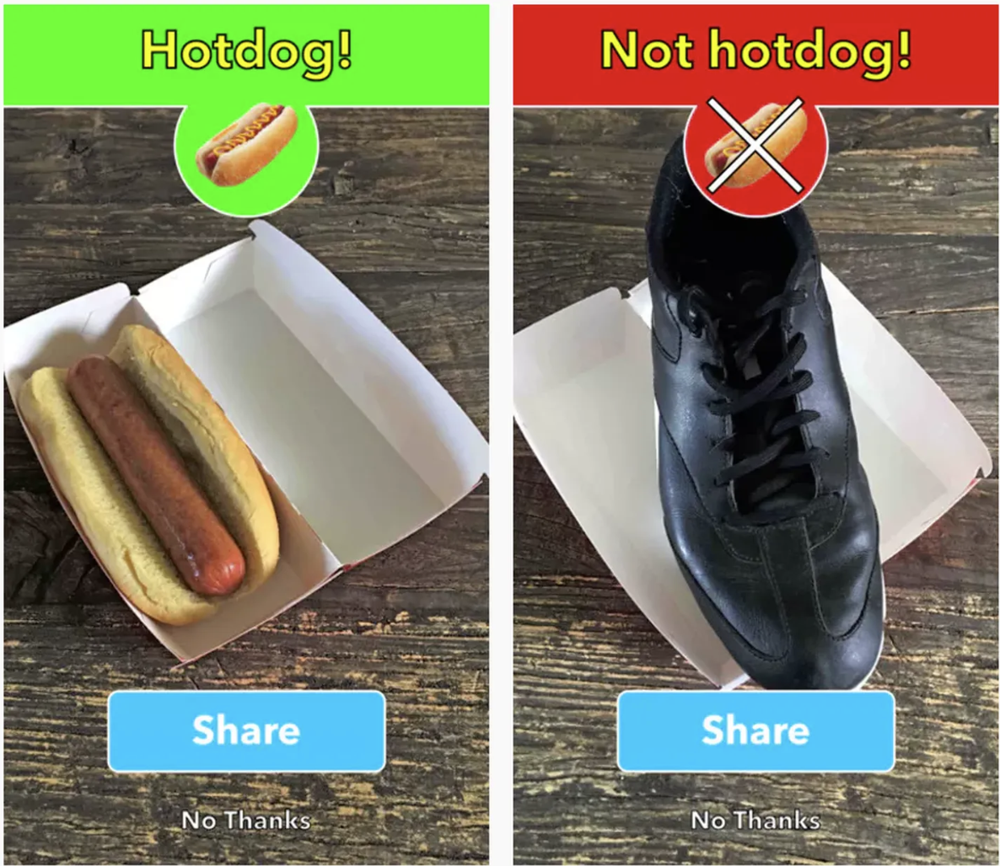
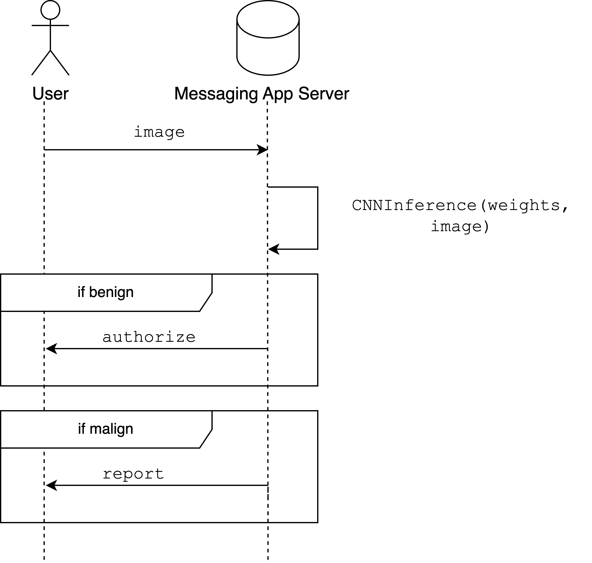
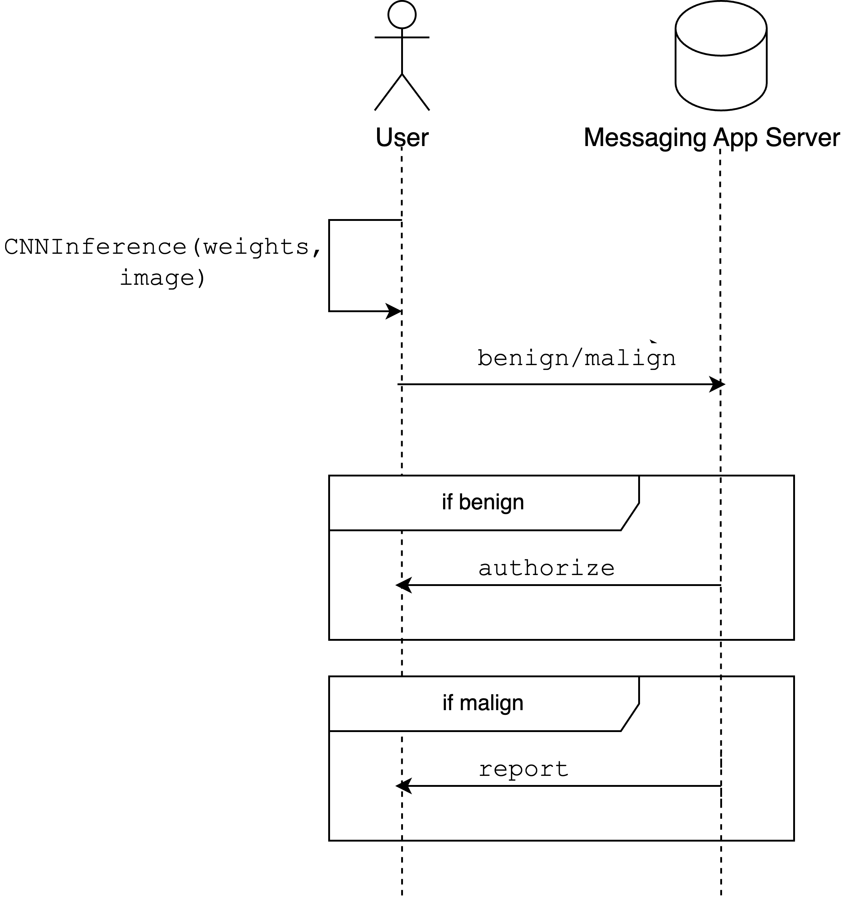
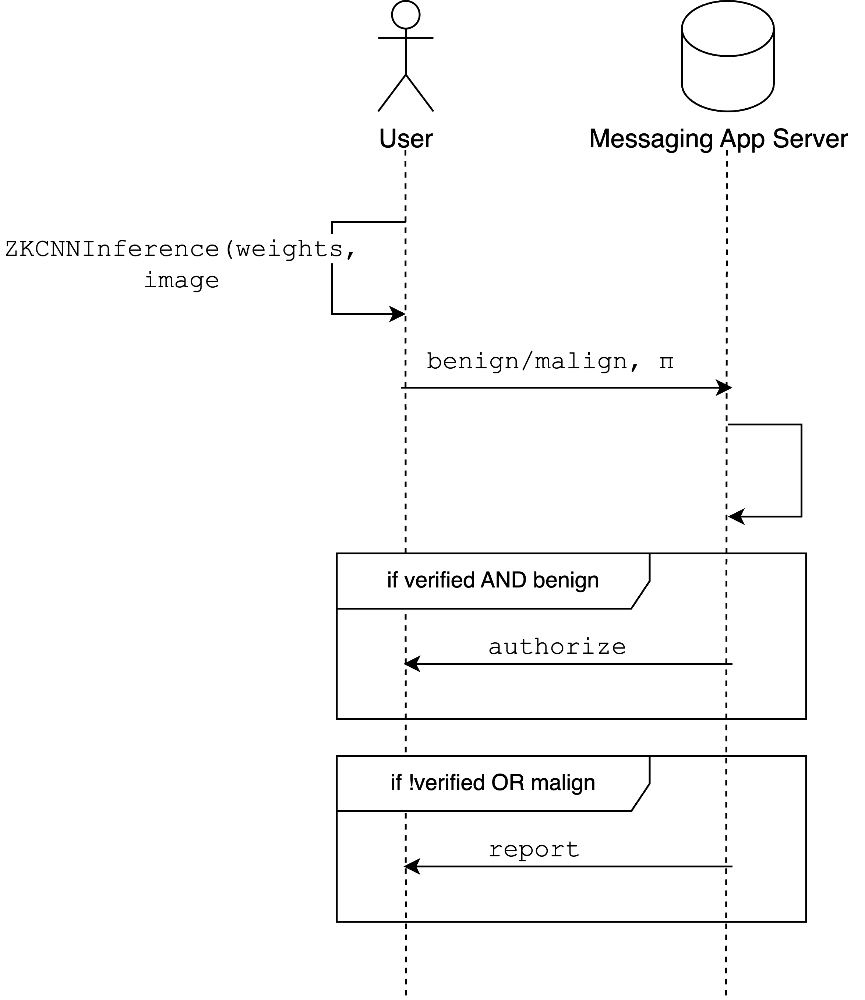
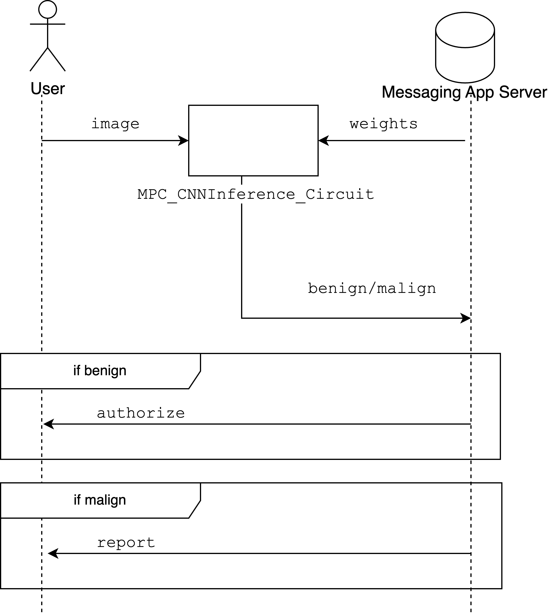
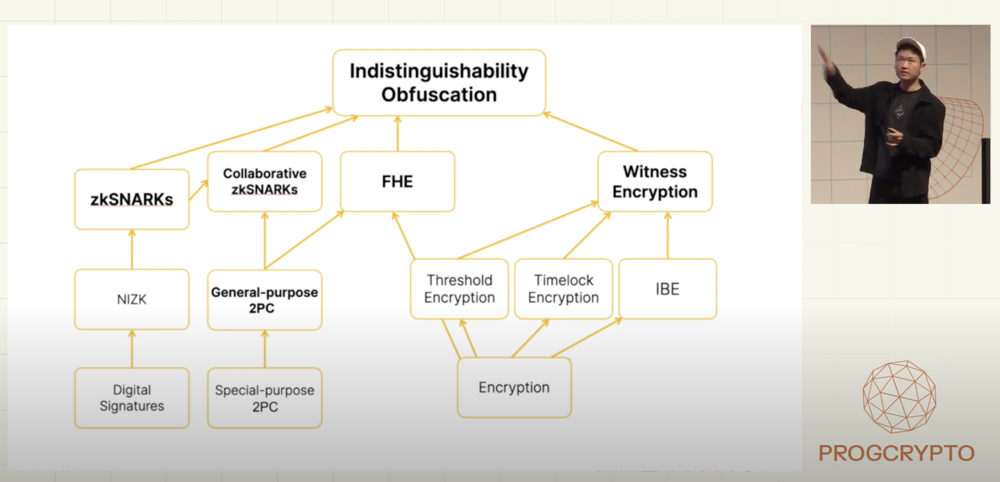

Beyond ZKML
Thanks to Nam Ngo for the discussions and reviews. You can leave comments on the hackMD version of this document here.
The EU is in the process of approving a new regulation that forces mandatory scanning into messaging apps to detect any exchange of elephant pictures.
Digital rights activists, privacy regulators, and national governments have quickly renamed it to Chat Control, claiming that it would infringe the privacy and confidentiality of user communications and be "crossing the Rubicon" in terms of mass surveillance of EU citizens. Note that this confidentiality is guaranteed today by end-to-end communication encryption.
This article sketches the design of a solution that maintains the confidentiality of user communications and allows the EU to detect any exchange of elephant pictures. We'll build such a solution by trial and error, leveraging different techniques such as Machine Learning, zkSNARKs, and MPC.
Effort #1
Machine learning is a powerful technique that can detect (with high probability) whether an image contains elephant content. More specifically, convolutional neural networks (CNNs) can be used for image recognition and classification. Such models go through a training phase, in which these are fed with large datasets to identify patterns and characteristics to classify an image between the categories elephant or non-elephant. This long and expensive phase outputs a set of weights and biases that define the model.
During the inference phase, the model is shown new images and is asked to classify them as elephants or non-elephants. As a rule of thumb, the bigger and more diverse the dataset used in the training phase, the more accurate the classification will be during the inference phase.

To comply with the regulation, applications like Signal, WhatsApp, and Apple's iMessage can use CNNs to scan the images sent by their users. In practice, this would require every message to go through a CNN running on the companies' premises and classify whether these images contain elephants.

Such a solution allows companies to comply with EU regulations but does not protect the confidentiality of user communications.
Effort #2
An alternative solution would require users to run the CNN locally on the User device and only share the inference function's (benign or malign) output with the messaging company server.

This solution would protect the User's data, but there's a caveat here: from a system design perspective, we require the messaging app not to access any bit of the user's computation. So how can the server be assured that the User runs the expected model, not a dummy function that always returns benign? Alternatively, how can the server be assured that this model wasn't run on an image different from the one the User will share with one of their contacts?
In such a scenario, the adversary is the User. They can perform attacks to bypass the CNN inference scanning. Therefore, such a solution wouldn't prevent the proliferation of images of elephants.
Effort #3
We need to find a way to prove to the Messaging App server that the user performed a certain computation correctly. Intuitively, the only way to achieve that seems to be allowing the server to re-do the computation themselves. But this would, again, leak the user's image.
zkSNARKs allows achieving computational integrity. Given a computation which rules are known by everyone, a prover can generate a zkSNARK that proves that the output is the result of running the computation on specific inputs. zkSNARKs also have two very nice properties: - The verification time is (quasi) constant no matter the time it took to run the computation (succinctness) - The prover can selectively decide what part of the computation to keep private and what to keep public (privacy)
These features can help solve the problem identified in the previous solution, which relied solely on ML. In particular, the company should require the User to run the CNN locally on their device and share proof that a specific CNN model inference function was run on a particular image (without revealing it!) and that the output of the inference function is benign.
In such a scenario, the user attack described in Effort #2 is prevented by requiring the User to generate a proof of verifiable CNN inference.

This category of solutions is broadly known as ZKML and includes projects such as EZKL, Modulus Labs and circomlib-ml. In short, ZKML is the process of snarkyfying the inference function of an ML model.
Sharing the proof with the server would allow them to check whether an image shared on their application has undergone a CNN inference and is, therefore, benign, complying with the EU regulation. At the same time, the confidentiality of the user content is protected since the image is a private input of the zkSNARK.
This solution seems technically sound, but the devil lies in the details. The main issue, other than performance, of this protocol, is that the weights, the result of training the ML classifier model must be published.
Knowing the model weights would allow an attacker to perform adversarial attacks on the CNN and generate false negatives. This topic is analyzed in recent crypto AI Vitalik's blog post.
Secondly, this design implies that the weights and biases resulting from the training phase are also available to the public so that the User can perform the inference function locally. It is worth asking whether there might be an incentive for the model owner to release their parameters to the public, given that the model likely represents a core intellectual property and a source of competitive advantage for the company running the model, other than the high cost handled during data collection and training phase.
Open-sourcing the weights would allow malicious users to trick the model while still being able to freely share elephant pictures. Furthermore, this requirement might be against the business incentives of the parties involved in the protocol.
Effort #4
In the previous example, a party (user) wanted to keep its content private, and another (server) wanted to keep the model's weights and biases private. Both parties wanted to perform a CNN inference function using these private data as input.
That's the definition of Secure Multi-Party Communication (MPC). The idea behind MPC is to compute private data from different parties without revealing anything apart from the computation's output.
A good frame to understand MPC is by starting with a mental experiment. Let's assume the existence of a trusted and incorruptible third party to which the User and the server share their private data. This party is trusted to never reveal the secrets of one party to the other or the world. This party would then perform the CNN inference function using these inputs and only share the computation output with the public. Again, this party is trusted to perform the computation correctly.
The output would tell the server whether the image is benign or malign while: - not revealing the content of the image to the server - not revealing the weights and biases of the model to the User
In the real world, we cannot build a secure application based on the assumption of the existence of such a trusted third party. Instead, we replace it with a set of cryptographic techniques (MPC) that allows us to achieve a similar result. Note that a possible alternative to building such a solution would be to replace the trusted third party with a Trusted Execution Environment (TEE). In such a case, the security is guaranteed by trusted hardware.

This category of solutions is known as Secure Neural Network Inference. Different techniques can be used to achieve that, each with its tradeoffs in terms of security and efficiency.
A solution based on MPC and Secure Neural Network Inference would protect the confidentiality of the User's data and guarantee the server's adherence to EU requirements.
Open Issues
Seems easy, right? In reality, there are still some issues related to the proposed solution. MPC-solutions based on Linear Secret Sharing have had high round complexity, while Garbled Circuits suffer from high bandwidth cost, meaning that the amount of data being exchanged between the parties can blow up pretty quickly and might not even be feasible if the User is performing their operation on a mobile device. On the other hand, Fully Homomorphic Encryption is another class of MPC technique that drastically reduces the amount of data that the parties need to exchange while increasing the amount of computation power that the server (but not the User!) needs to put into the protocol.
Further, more nuances and issues involve the protocol design itself. The latest solution proposed doesn't prevent the User from feeding a benign image into the MPC_CNNInference_Circuit, passing the control, and then sending a different malign image in an encrypted way to their contacts. The proposed design should integrate a way to prove that the image used as input to the MPC Circuit is the same as the one being encrypted and shared within the messaging. My recent work on Greco proposes a solution for that problem in the context of Fully Homomorphic Encryption.
Lastly, the proposed solution doesn't allow for third-party verifiability. The protocol guarantees each party involved in the protocol's correctness of the function. However, external parties cannot verify this correctness. In such context, the Messaging App server wouldn't have any cryptographic proof to show the EU regulators that they comply with the rules and that every image passing through their app has undergone a CNN scanning. The MPC circuit would probably require wrapping inside a further zkSNARK.
Conclusion
zkSNARKs are only a tool in the toolbox of cryptographic techniques that we have at our disposal. As many of us were onboarded to cryptography through ZK, it is normal to consider it a Swiss knife for any privacy-preserving application.
When it comes to ML, the server desires to protect the weights of the model, while the User desires to protect their input data. With ZKML, you either get privacy of the weights or on the input, depending on who is the prover. MPC allows the protection of both the weights and the inputs.
ZK is a single-player cryptographic technique that only allows a party to prove the computational integrity (and add privacy to it), of which the data must all be known by the prover. In any multi-player scenario where private inputs come from different parties, ZK wouldn't work. Luckily enough, MPC provides a decent solution to that.
Still, as described before, any MPC-based solution would require to be wrapped inside zkSNARK if third-party verifiability (or on-chain verifiability) is required.
Most likely, your final solution would look like a Frankenstein leveraging a mix of cryptographic techniques at our disposal
